Conference paper talk · agentic design systems
AutoDesign:
Meta-Harness Optimization for Long-Horizon Agentic Design
Learning a reusable design harness from rollout feedback—while model weights remain fixed.
Yaxin Luo* · Haobin Jiang* · Jialv Zou · Xu Huang · Wenhao Yan · Haodong Li · Zhengrong Yue · Jing Li · Xiaofu Chen · Xiaohan Zhao · Jiacheng Liu · Jiacheng Cui · Zhiqiang Shen · Xiaotong Li†
Meituan · MBZUAI · HUST · Peking University · Tsinghua University · CUHK · Shanghai Jiao Tong University
Figure 2 · self-authored artifact
AutoDesign can create a complete poster about its own paper in one long-horizon workflow
The target is a source-grounded, ready-to-use, editable communication artifact—not a visually plausible one-shot image.
Figure 2 is an end-to-end artifact demonstration: the full workflow finishes in approximately 40 minutes with negligible human intervention.
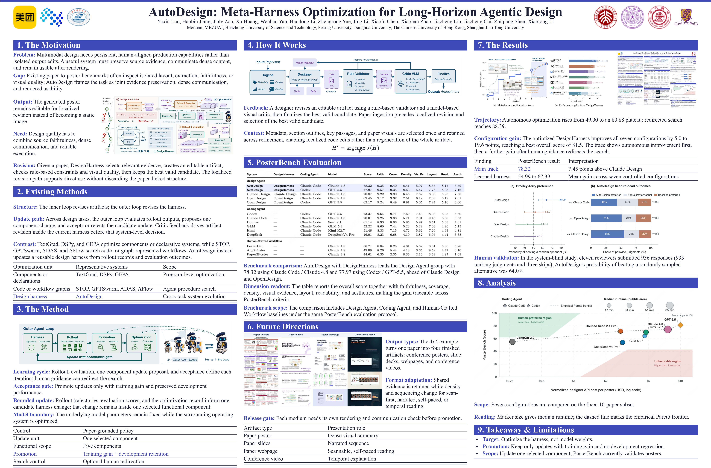
What is optimized?
The design harness is the learnable system surrounding a fixed model
A design harness turns a multimodal source and a design context into a human-facing artifact.
The execution trajectory records intermediate actions, states, and revisions. Meta-harness optimization changes H—not the underlying model parameters.
Figure 3 · system overview
AutoDesign couples artifact-level repair with harness-level learning around a fixed model
The system learns from recurring design failures without changing the model's parameters.
- Inner loop: a design harness turns source context into an editable artifact and revises it with critic feedback.
- Outer loop: the meta-harness aggregates trajectories and scores across tasks to propose a bounded system update.
- Acceptance: a candidate replaces the current harness only when it improves training performance without degrading development performance.
Optional human guidance can redirect evaluation or optimization; the accepted harness remains the reusable object of learning.
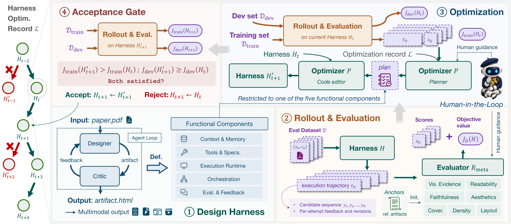
The same feedback loop operates at two scales: local artifact quality and durable system behavior.
Learning architecture
Two nested loops turn local repairs into durable harness updates
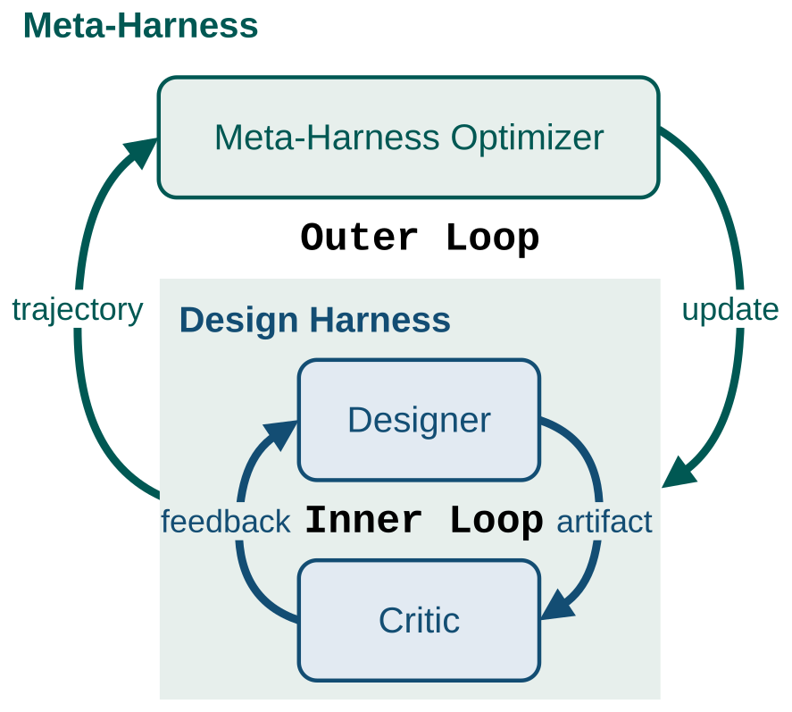
The loops work at different scopes and therefore solve different problems.
Inner loop: generate, validate, critique, and revise one artifact while the current harness stays fixed.
Outer loop: aggregate trajectories and scores across tasks to diagnose recurrent system failures.
Acceptance gate: promote an update only after it improves training performance without hurting development performance.
Local fixes improve one output; accepted outer-loop updates improve the reusable workflow that generates future outputs.
Outer-loop update
Each update is evaluated on train and dev before promotion
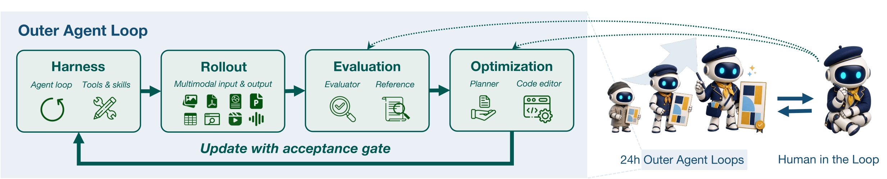
Roll out Ht: run the current harness on training tasks; collect trajectories τt and evaluator scores st.
Evaluate: a fixed optimization-time evaluator converts rollout evidence into scores and localized failures.
Propose one component: planner and code editor construct a candidate H′t+1 without changing another harness component.
Accept only when: Jtrain(H′) > Jtrain(H) and Jdev(H′) ≥ Jdev(H). Development results are withheld from proposal construction.
The optimized DesignHarness
The inner loop keeps the artifact editable while dual critics drive local revision
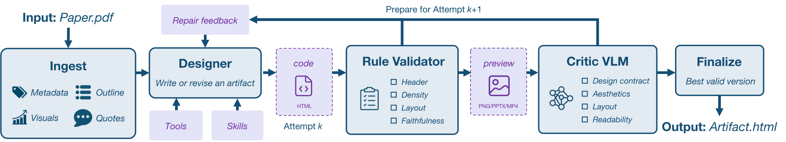
The implementation turns source materials into an editable artifact and uses feedback that is actionable at the level of a local revision.
The implementation permits up to K = 12 refinement attempts, then finalizes the best candidate that preserves core safety and integrity constraints.
Ingest once: retain metadata, outline, key passages, figures, tables, and source locations across attempts.
Author in code: the designer writes or revises native HTML rather than regenerating an opaque image.
Critique before finalizing: deterministic checks cover provenance and severe layout damage; the VLM critiques design, readability, and aesthetics.
Evaluation protocol
PosterBench evaluates finished posters with seven dimensions and protected gates
The benchmark evaluates rendered artifacts—not prompts or intermediate code traces.
- 100 papers from five disciplines form the full benchmark; a 10-paper subset supports fast controlled studies.
- Fixed weights: Faithfulness 10, Coverage 10, Density 15, Visual Evidence 10, Layout 20, Readability 25, Aesthetics 10.
- Protected gates: severe layout, viability, failure, or render-integrity issues cap a record score.
A protected gate is not an eighth reward dimension: it prevents a high aggregate from hiding a severe delivery failure.
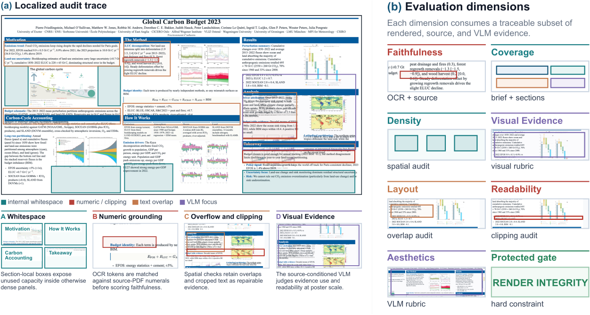
| Evidence layer | Dimensions |
|---|---|
| Source | Faithfulness · Coverage |
| Render | Density · Layout |
| Presentation | Visual Evidence · Readability · Aesthetics |
Experimental design
The protocol separates complete-system performance from component-level effects
Every reported system receives the same source paper and assets, then is rendered and scored under the same PosterBench protocol.
The full-scale main track answers “which complete system performs best?” Controlled tracks answer “which layer explains the difference?”
The small 10-paper subset is a diagnostic setting, not a replacement for the 100-paper main result.
| Track | Fixed factors | Varied factor | Question answered |
|---|---|---|---|
| Main | Shared papers, assets, renderer, evaluator | Complete system | Who performs best on 100 papers? |
| Design harness | Claude Code + Claude 4.8 | Design harness | Does AutoDesign's design layer help? |
| Coding harness | DesignHarness + GLM 5.2 | Coding harness | How much does the execution stack matter? |
| Model | DesignHarness + Claude Code | Model | How robust is the harness across models? |
The paper also reports a direct before/after harness-attachment analysis across seven fixed coding-agent–model configurations.
Main evidence
AutoDesign leads the 100-paper main track—and the learned harness improves across configurations
The full benchmark establishes complete-system quality; Figure 1 shows both the harness-improvement trace and the cross-configuration benefit.
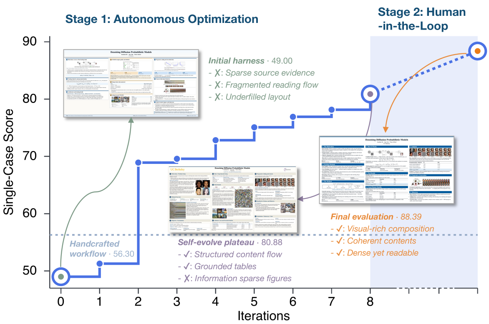
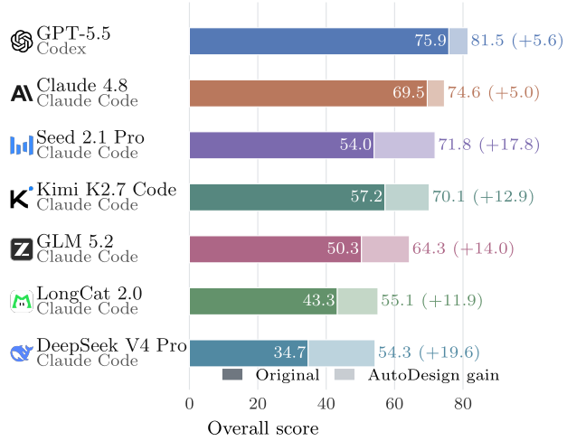
Read Figure 1 as mechanism evidence and the score rail as the 100-paper system result.
Harness attachment analysis
When model and coding agent stay fixed, DesignHarness improves all seven completed configurations
This is the cleanest test of the learned design layer.
The largest lift occurs with DeepSeek V4 Pro; the smallest still improves under the Claude 4.8 configuration.
| Coding agent | Model | Original | AutoDesign | Gain |
|---|---|---|---|---|
| Codex | GPT-5.5 | 75.87 | 81.46 | +5.59 |
| Claude Code | Claude 4.8 | 69.55 | 74.56 | +5.01 |
| Claude Code | Seed 2.1 Pro | 54.01 | 71.83 | +17.82 |
| Claude Code | Kimi K2.7 | 57.20 | 70.12 | +12.92 |
| Claude Code | GLM 5.2 | 50.32 | 64.33 | +14.01 |
| Claude Code | LongCat 2.0 | 43.26 | 55.13 | +11.87 |
| Claude Code | DeepSeek V4 Pro | 34.73 | 54.29 | +19.56 |
Because the coding agent and model are held fixed within each row, the comparison isolates the contribution of the attached design harness.
Cost–performance trade-off
The best deployment choice depends on the score, cost, and runtime trade-off
The fixed 10-paper comparison reveals a practical frontier instead of a single universal winner.
| Configuration | Score / cost proxy |
|---|---|
| LongCat 2.0 | 55.13 · $0.27 / poster |
| Seed 2.1 Pro | 71.83 · $2.75 / poster |
| Claude 4.8 | 74.56 · $7.63 / poster |
| GPT-5.5 | 81.46 · $10.02 / poster |
Seed 2.1 Pro reaches 88% of the GPT-5.5 score at 27% of its normalized designer-only API cost.
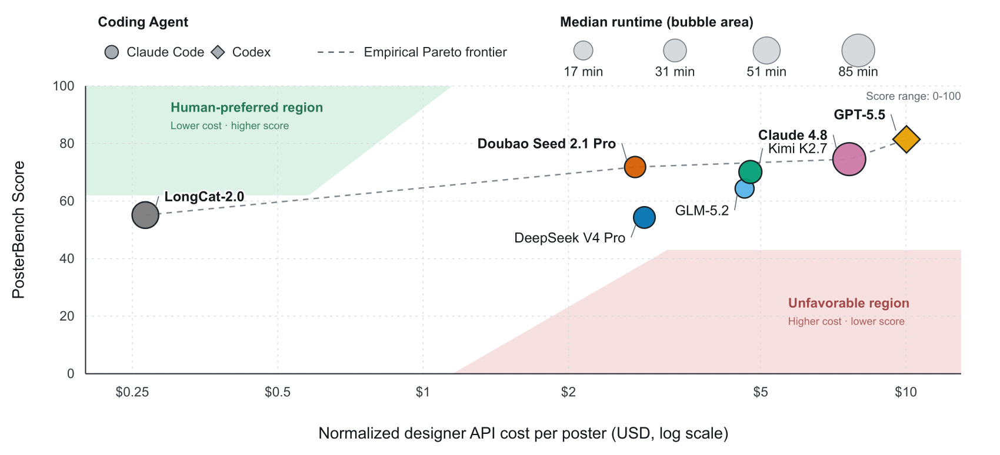
Human evaluation
In system-blind pairwise evaluation, AutoDesign receives the strongest preference estimate
Reviewers saw anonymous posters generated from the same source paper; no method, model, or harness identity was shown.
Tie-adjusted preferences: 61.3% vs. Claude Code, 63.1% vs. OpenDesign, and 67.6% vs. Claude Design.
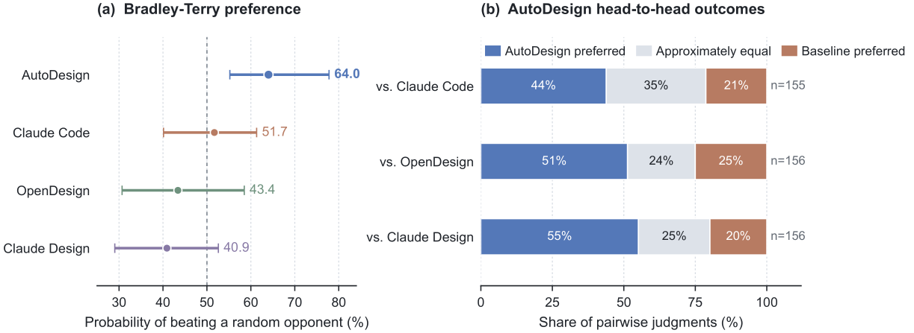
How to read the benchmark
PosterBench is informative—not a replacement for human preference
The protocol is designed to assess source-grounded communication quality; human pairwise choices provide an independent calibration signal.
The practical use is confidence calibration: a large PosterBench margin identifies comparisons where human choice is more consistent.
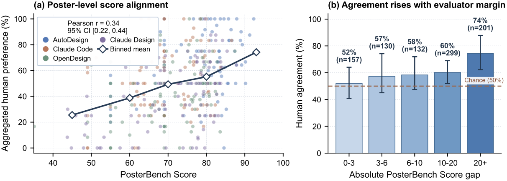
Limits and future directions
A new medium needs its own evidence contract—not only a new output format
AutoDesign is validated for paper-to-poster generation. Slides, webpages, and conference video are capability pilots rather than PosterBench results.
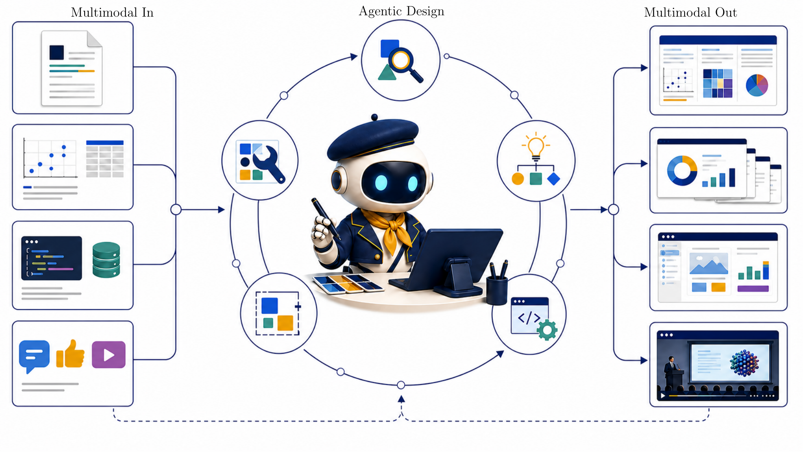
Figure 12 · pilot artifacts
The system can produce posters, slides, webpages, and video—but this is not yet a cross-format benchmark
Figure 12 demonstrates output breadth from the same paper source; it does not establish that one evaluation scheme transfers across media.
The initial DesignHarness already transfers capability across media; a shared cross-format evaluation protocol remains future work.
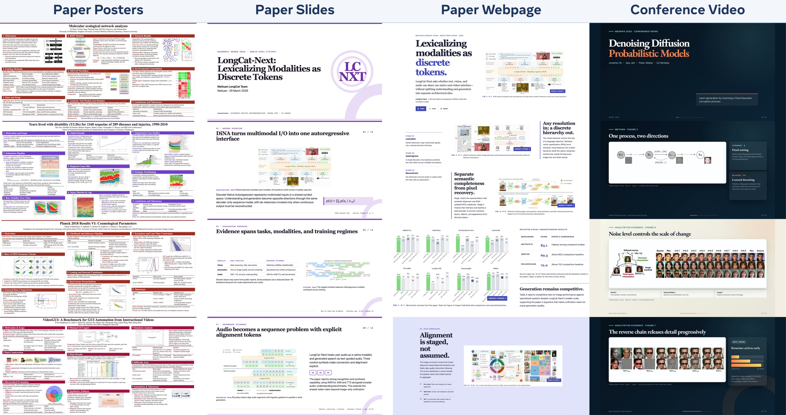
Implications
Long-horizon design improvement can live in the system around a fixed model
The contribution is an executable improvement loop—not a claim that model weights learned to design.
Long-horizon trajectories and verified repairs become execution-time supervision for refining the surrounding harness.
Optimize behavior where it lives. Recurrent failures are assigned to a bounded harness component, then accepted only through an independent gate.
Keep the output editable. Native artifacts make a source or layout correction a local code revision instead of a full regeneration.
Treat evaluation as infrastructure. A frozen benchmark, render audits, and human calibration make improvement claims testable.
Complement post-training. Harness optimization improves execution-time behavior; it does not replace model capabilities.
Closing
Learn the harness.
Validate the artifact.
Keep the result editable.
Questions & discussion
AutoDesign moves the optimization target from a single output to a reusable, executable design harness around a fixed model.
The claim is supported by a 100-paper benchmark, controlled harness-attachment analysis, render-aware audits, and system-blind human evaluation.
For every new medium, capability must be paired with a source–output dataset, evaluator, validation gate, and communication objective before it is treated as validated.